What does the coupled membrane–gate neuron contribute to the PES residual? Ten residual bases on the frozen ρ = 3 PD + desired-rate feedforward runner, two MuJoCo platforms, five 45 s missions, noise-free, seed 1. Only the paired-current → activity map changes between arms.
| Basis | X2 | CF2 | Preregistered verdict | Definition |
|---|---|---|---|---|
| CMG (paper, G=1e5, chi=1) | 37.30% | 22.42% | reference | Canonical coupled membrane–gate unit, Table I parameters. Reference. |
| LPF + static logistic | 46.34% | 28.61% | reproduces CMG | a = clip(G·σ(α(LPFτ(I) − vth)), 0, 1). Same τ, α, vth, G as CMG; no gate state, no γr threshold feedback, no conductance. |
| CMG chi=0 | 37.30% | 22.42% | reproduces CMG | Canonical CMG with input-dependent conductance switched off (χ = 0). |
| Latch replay | 9.65% | 3.81% | fails | aj = 0.3728 until unit j's recorded CMG latch time (first r > 0.5), then 1. Open-loop two-level schedule. |
| CMG G=1e3 | 9.01% | 3.58% | fails | Canonical CMG with readout gain G = 10³ (preregistered development rule). |
| CMG G=1 | 4.44% | 1.68% | fails | Canonical CMG with readout gain G = 1, so a = r. |
| Constant-rest (a=0.3728) | 6.85% | 2.63% | fails | a ≡ 0.3728 on all six units, CMG's resting readout. |
| Constant-one (archived) | 10.34% | 4.29% | fails | a ≡ 1 on all six units; archived NumPy adapter (same-step PES). |
| Constant-one (Nengo PES order) | 10.34% | 4.29% | fails | a ≡ 1 with the Nengo one-step PES ordering; checks the ordering effect. |
| Static paired (archived) | 11.88% | 4.75% | fails | a = clip(I / (Ib + Ig), 0, 1); no temporal state. |
Geometric mean over five missions of mean true quaternion-angle error ratio to classical; improvement = 100·(1 − ratio). Verdicts from PREREGISTRATION.md: reproduces CMG ≥ 90% of CMG's improvement on both platforms; fails ≤ 50% on both. The CMG row reproduces the published Sec. VI-D numbers (asserted in analyze.py).
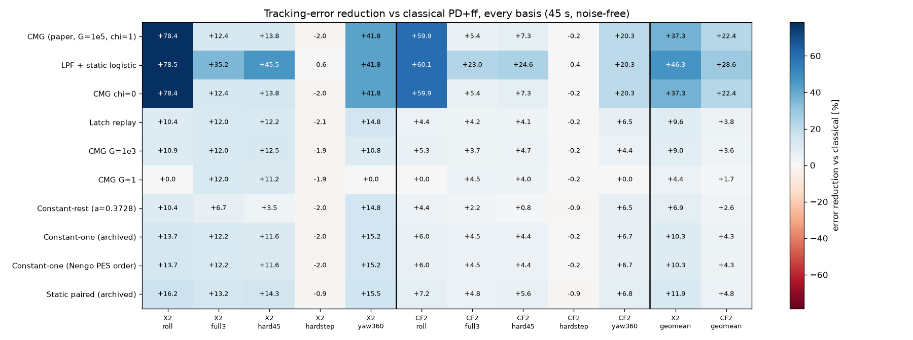
| Basis | X2 | CF2-rotor | ||||||||
|---|---|---|---|---|---|---|---|---|---|---|
| roll | full3 | hard45 | hardstep | yaw360 | roll | full3 | hard45 | hardstep | yaw360 | |
| CMG (paper, G=1e5, chi=1) | +78.4 | +12.4 | +13.8 | -2.0 | +41.8 | +59.9 | +5.4 | +7.3 | -0.2 | +20.3 |
| LPF + static logistic | +78.5 | +35.2 | +45.5 | -0.6 | +41.8 | +60.1 | +23.0 | +24.6 | -0.4 | +20.3 |
| CMG chi=0 | +78.4 | +12.4 | +13.8 | -2.0 | +41.8 | +59.9 | +5.4 | +7.3 | -0.2 | +20.3 |
| Latch replay | +10.4 | +12.0 | +12.2 | -2.1 | +14.8 | +4.4 | +4.2 | +4.1 | -0.2 | +6.5 |
| CMG G=1e3 | +10.9 | +12.0 | +12.5 | -1.9 | +10.8 | +5.3 | +3.7 | +4.7 | -0.2 | +4.4 |
| CMG G=1 | +0.0 | +12.0 | +11.2 | -1.9 | +0.0 | +0.0 | +4.5 | +4.0 | -0.2 | +0.0 |
| Constant-rest (a=0.3728) | +10.4 | +6.7 | +3.5 | -2.0 | +14.8 | +4.4 | +2.2 | +0.8 | -0.9 | +6.5 |
| Constant-one (archived) | +13.7 | +12.2 | +11.6 | -2.0 | +15.2 | +6.0 | +4.5 | +4.4 | -0.2 | +6.7 |
| Constant-one (Nengo PES order) | +13.7 | +12.2 | +11.6 | -2.0 | +15.2 | +6.0 | +4.5 | +4.4 | -0.2 | +6.7 |
| Static paired (archived) | +16.2 | +13.2 | +14.3 | -0.9 | +15.5 | +7.2 | +4.8 | +5.6 | -0.9 | +6.8 |
Error reduction vs classical, %. Shaded cells beat CMG on that mission by more than 3 points.
| Basis | X2 | CF2-rotor | ||||||||
|---|---|---|---|---|---|---|---|---|---|---|
| roll | full3 | hard45 | hardstep | yaw360 | roll | full3 | hard45 | hardstep | yaw360 | |
| CMG (paper, G=1e5, chi=1) | 0.00 | 0.67 | 0.96 | 0.98 | 0.00 | 0.00 | 0.75 | 0.74 | 0.98 | 0.00 |
| LPF + static logistic | 0.00 | 0.09 | 0.08 | 0.31 | 0.00 | 0.00 | 0.20 | 0.22 | 0.29 | 0.00 |
| CMG chi=0 | 0.00 | 0.67 | 0.96 | 0.98 | 0.00 | 0.00 | 0.75 | 0.74 | 0.98 | 0.00 |
| Latch replay | 0.00 | 0.66 | 0.94 | 0.97 | 0.00 | 0.00 | 0.67 | 0.66 | 0.98 | 0.00 |
| CMG G=1e3 | 0.00 | 0.66 | 0.95 | 0.97 | 0.00 | 0.00 | 0.67 | 0.67 | 0.98 | 0.00 |
| CMG G=1 | 0.00 | 0.66 | 1.00 | 0.97 | 0.00 | 0.00 | 0.99 | 0.66 | 0.97 | 0.00 |
| Constant-rest (a=0.3728) | 0.00 | 0.00 | 0.00 | 0.00 | 0.00 | 0.00 | 0.00 | 0.00 | 0.00 | 0.00 |
| Constant-one (archived) | 1.00 | 1.00 | 1.00 | 1.00 | 1.00 | 1.00 | 1.00 | 1.00 | 1.00 | 1.00 |
| Constant-one (Nengo PES order) | 1.00 | 1.00 | 1.00 | 1.00 | 1.00 | 1.00 | 1.00 | 1.00 | 1.00 | 1.00 |
| Static paired (archived) | 0.00 | 0.00 | 0.00 | 0.09 | 0.00 | 0.00 | 0.00 | 0.00 | 0.08 | 0.00 |
Fraction of unit-samples with a = 1. CMG on Hard45/Hardstep sits near 1 because latched units never release; LPF + logistic returns to rest whenever the command falls.
Decoder [I, −I], PES with Nengo's one-step ordering, η = 8·10⁻⁴, leak, ±6 projection, β (X2 0.5, CF2 0.2) and the output gate are identical in every arm. A NumPy restatement of CMG with the same ordering reproduces the archived Nengo run to 3·10⁻¹³ over 90,000 closed-loop steps.
True quaternion error, log scale. On Roll and Yaw360 the CMG trace lies under the LPF + logistic trace.
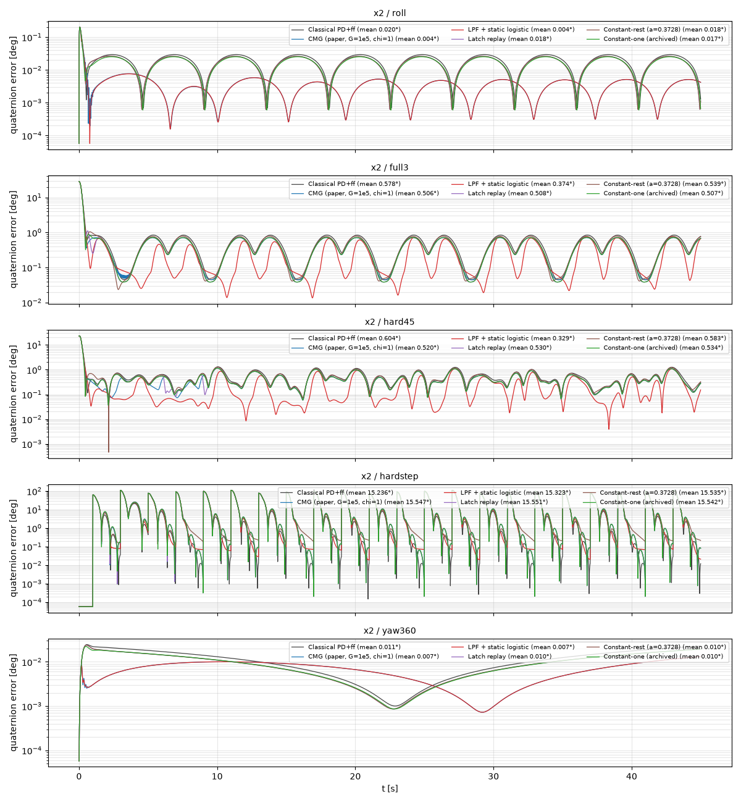
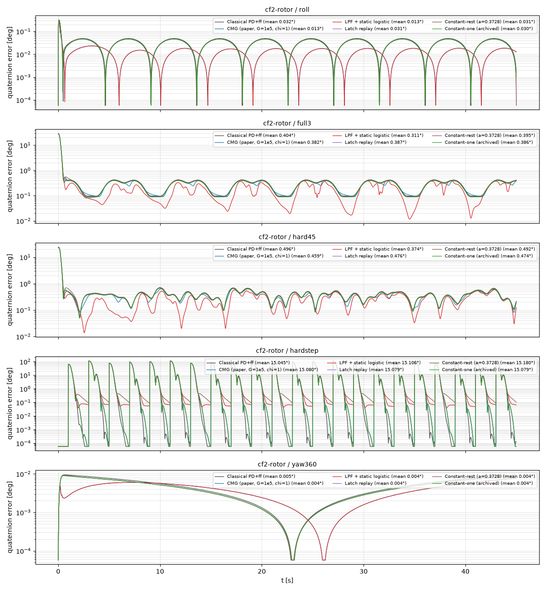
Units ordered +x, +y, +z, −x, −y, −z. Each panel title gives that arm's error reduction on the mission.
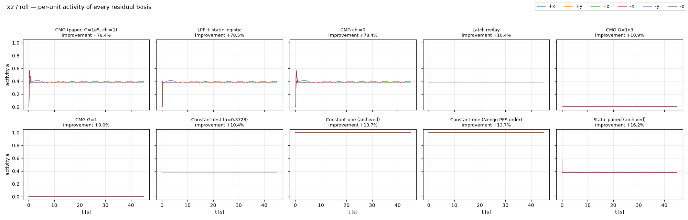
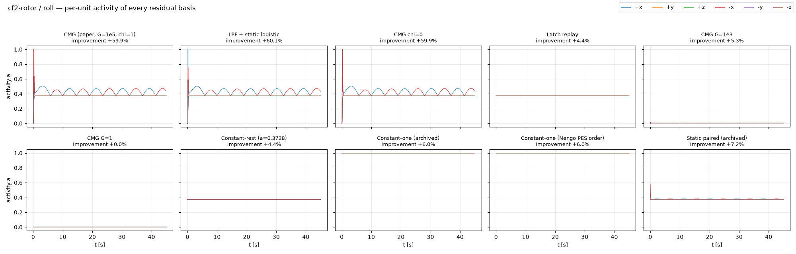
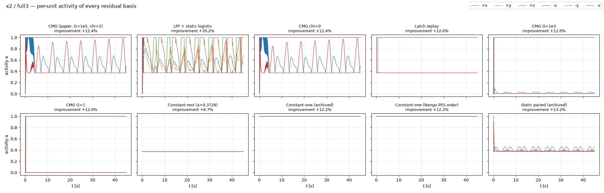
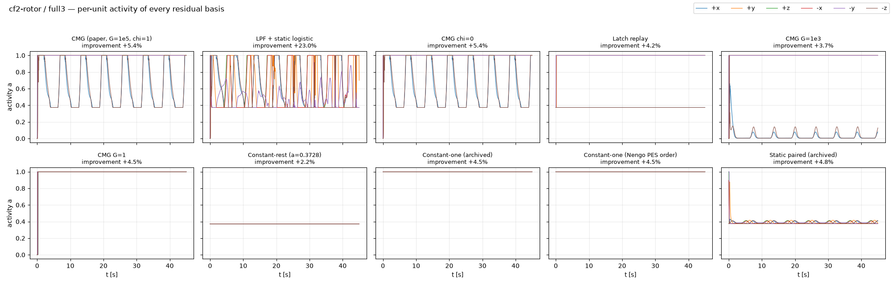
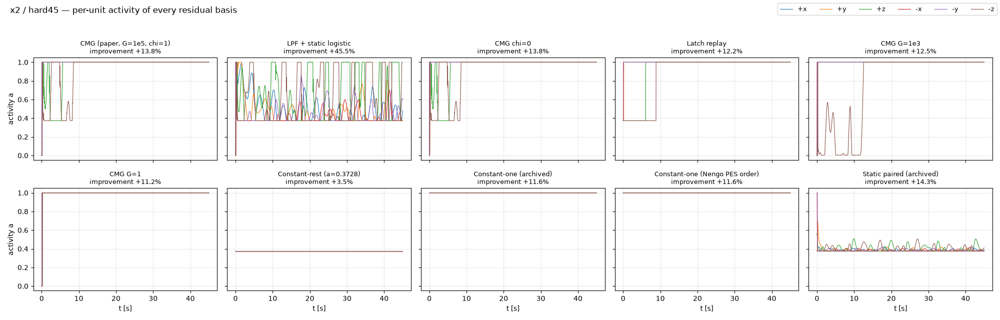
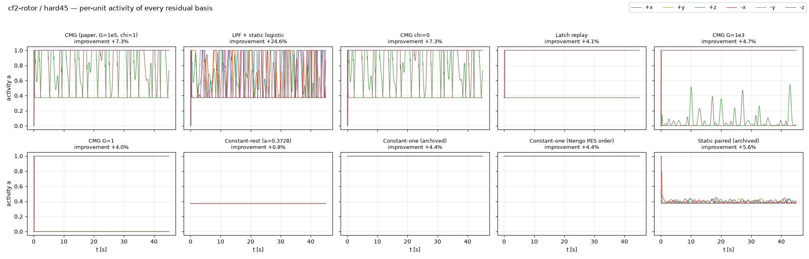
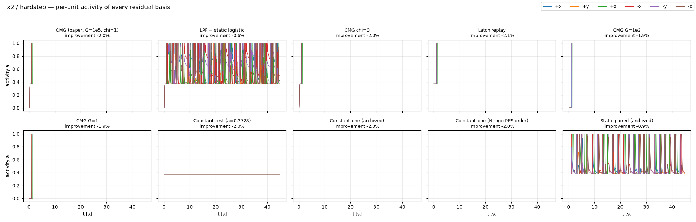
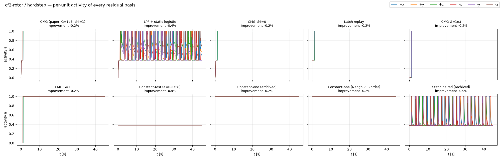
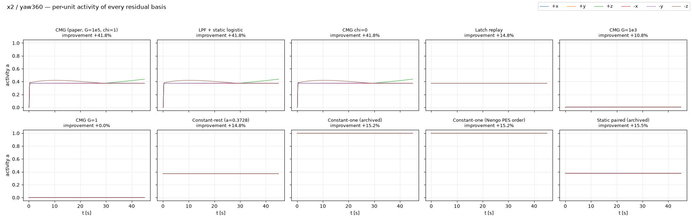
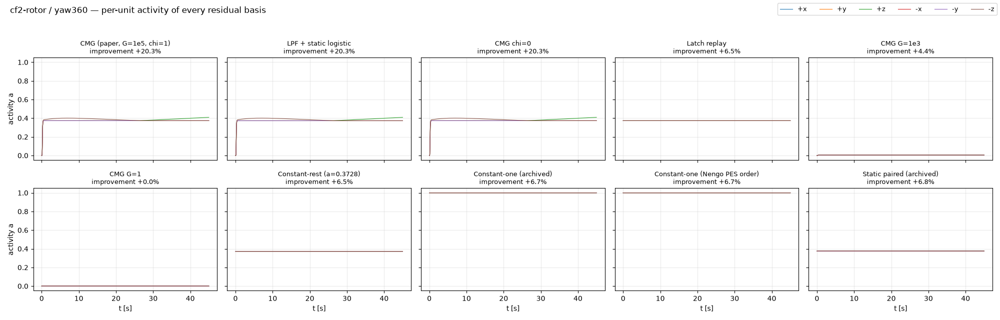
The six CMG units do not learn. They are a fixed temporal feature generator, and PES trains only the 3×6 decoder, as a leaky normalized-LMS update. Results therefore depend on how informative the features are and how well-conditioned the PES step is (corner η‖a‖²/h: about 1.4 rad/s unlatched, 9.6 rad/s fully latched).
| Unit regime | Readout | What PES can learn |
|---|---|---|
| Below the onset fold (v < 0.888) | a ≈ min(1, G·eα(v − vth)): exponential tuning of the low-passed command, arest = 0.3728 | Graded, error-correlated features. The source of the gain. |
| Latched (crossed the fold once) | a = 1 forever; release fold v ≈ −0.89 lies below vreset = 0 | Only a bias: a leaky lagged-P tracker, constant-one performance. |
| Relaxation oscillation | Periodic; needs v below the release fold | Never reached in this application. |
| Project | What carries over | Next test (proposed) |
|---|---|---|
| ACC 2027 paper | CMG works as a smooth temporal-feature unit in the tested regime; latching limits it; χ has no effect; rename the readout gain. | η = 0 frozen-decoder control to split fixed feedforward from PES learning. |
| Neuromorphic RL pilot | Latching likely turns actor and critic features into constants on large-error missions. | Rerun the frozen protocol with LPF + logistic features; log latched fraction. |
| Drone racing | Racing errors exceed Hard45, so a latching basis collapses within seconds. | Non-latching basis, or gate reset per lap; log latched fraction. |
| DVS perception | LPF + logistic is a natural event-rate encoder; the tail acts as contrast sensitivity near threshold. | Compare against latching CMG at matched η‖a‖². |
| P1 HyperLIF Learning | Fold stiffness (sensitivity ∝ α/τr) and dead latched units shape the gradients. | Track latched fraction and gradient norms; test τr → 0 against EventProp gradients. |
| P5 dual self-tuning | A latched residual basis degrades to a lagged-P term that overlaps the gain tuner. | Ablate graded vs latched basis inside the dual architecture. |
| Hardware (Hover, Aero2, QArm) | Current-encoder bias moves arest exponentially. | Measure encoder bias and recompute the tail range before arming. |
| Multi-agent systems | Latching makes agents' features diverge by history rather than by state. | Shared non-latching basis vs per-agent latching CMG on a formation task. |
Full note with evidence labels: MECHANISM_AND_TRANSFER.md.
Source: experiments/cmg_mechanism_controls_2026-10-01 — PREREGISTRATION.md, analysis/RESULTS.md, analysis/report/summary_table.csv.